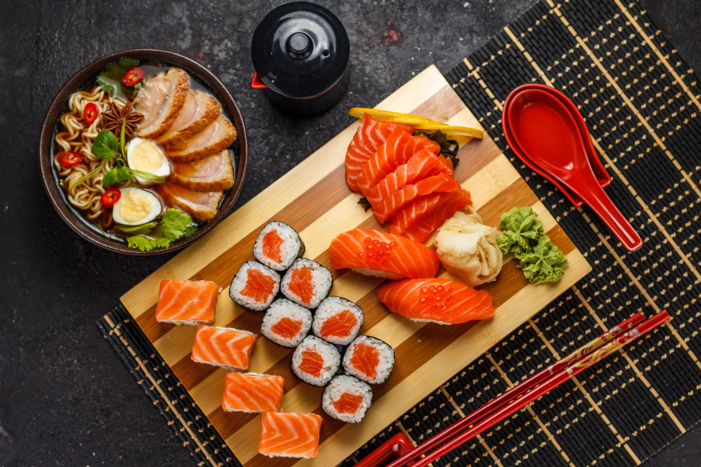
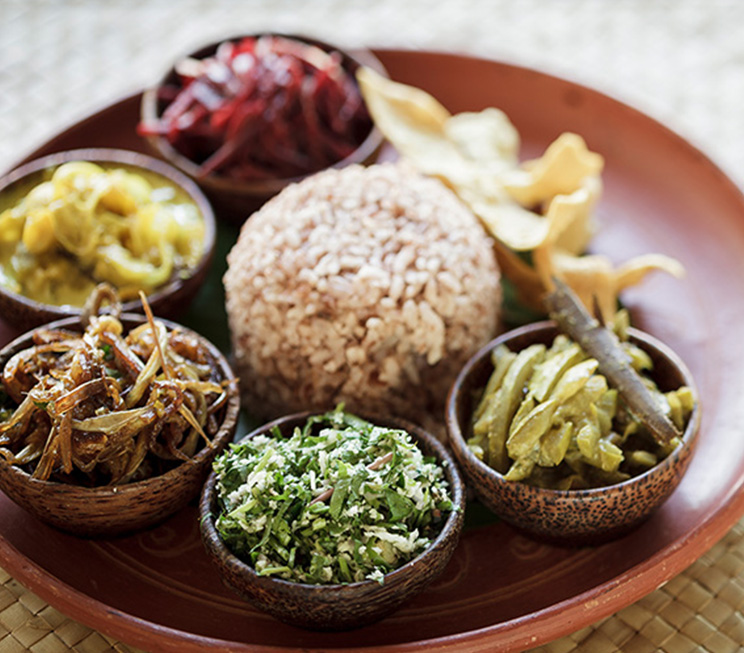

Chinese

Our chinese restaurant offers a great variety of dishes known for it's rich flavours which will certainly satisfy all your taste buds and we can ensure it through the quality of our chefs.
We offer lush cuisines such as the traditional rice and noodles which only tends to be the best out of all. We also provide the trademark cuttlefish and devilled chicken which tends to just lift you off your seat. You can find more about our varieties through the menu below.
Click to see menu:
Menu
Japanese
Our japanese restaurant offers the most finest dishes in SriLanka compared to others as it includes a great variety which is hard to be found elsewhere and our cooks will prove it to you.
We offer the trademark sushi and ramen which is the most enjoyed japanese cultural dishes around the world and many more finger-licking dishes. You can find more about our varieties through the menu below.
Click to see menu:
Menu
Sri Lankan
Our sri lankan restaurant offers the best cuisines expected by any sri lankan and the tastes will surely remain in your mind, so what are you waiting for? Our cuisines include yellow rice, hoppers and other mouth watering curries such as mutton curry, chicken curry which provides an enthusiastic taste which can satisfy your taste buds. You can find more about our varieties through the menu below.
Click to see menu:
Menu